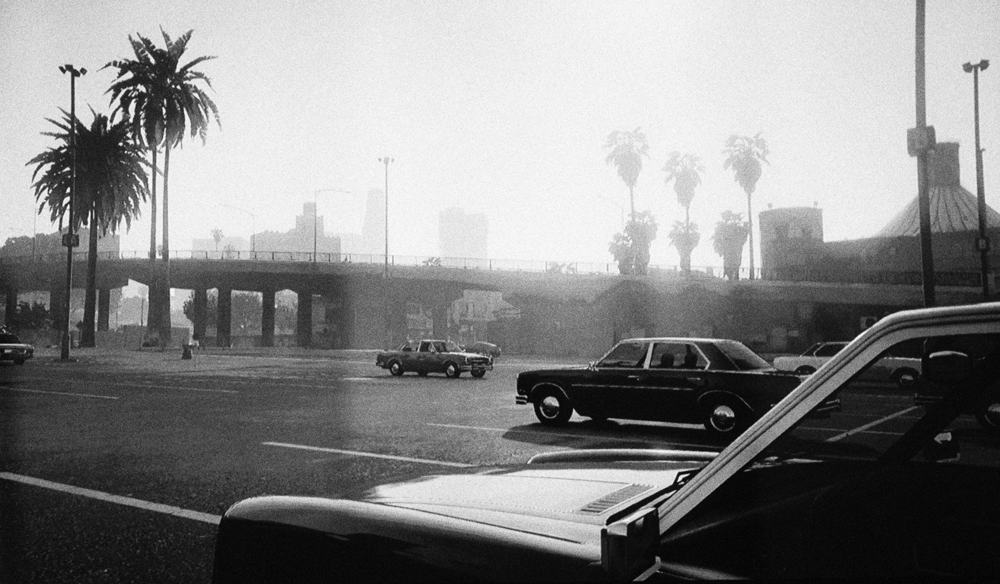

2 Architectural Photography
“[…] a virtual urban life, like playing on the keyboard of the city as if it were a land of screen. I saw it as the end of architecture … by pushing the concept to its limit and primarily by using the photograph as a point of departure. This is reflected in the idea that the great majority of images are no longer the expression of a subject, or the reality of an object, but almost exclusively the technical fulfilment of all its intrinsic possibilities. It’s the photographic medium that does all the work. People think they’re photographing a scene, but they’re only technical operators of the device’s infinite virtuality. The virtual is the device that wants nothing more than to function, that demands to function.” – Jean Baudrillard - The Singular Objects of Architecture and Philosophy, 2000
Architectural photography was born with the invention of heliographs, daguerreotypes and large format cameras in the first half of the 19th century. Due to the long exposure times, buildings were the ideal subjects for the early scientific experiments of Joseph Nicéphore Niépce, Louis-Jacques-Mandé Daguerre and William Talbot.
View from the Window at Le Gras by Joseph Nicéphore Niépce, 1826-27.
Paris’ Boulevard du Temple by Louis-Jacques-Mandé Daguerre, 1839.
While the relationship between architecture and photography has been part of the medium from its birth for technical reasons, this form of image making has evolved to visually explore the connection with material spaces and forms, as well as the relation between human perception and architectural bodies. The photographic image is not simply a document of a structure, but “is, in fact, part of its architecture”.1 Curator Urs Stahel wrote that “pictures […] offer a discourse that is unlike the physical experience of architecture. They transform volume into surface; distil matter into forms and signs. Photography shapes architecture, enlarging and reducing it, heightening and shortening it, accentuating it, yet largely leaving it to its own devices.”2
The first architectural photographer is considered to be Joseph-Philibert Girault de Prangey, who started to take daguerreotypes of iconic buildings like the Parthenon in Athens and Notre-Dame in Paris from 1841. Architectural photography evolved in two distinct approaches, namely Elevation and Perspective. The Elevation Approach focuses on representing a structure as a two-dimensional image, obtaining a viewpoint that is parallel to the building and aimed at showing as many details as possible. The Perspective Approach aims at depicting the structure within the space, focusing on the third dimension and often taken at an angle or from a vantage point from a corner.
Facade and North Colonnade of the Parthenon on the Acropolis, Athens by Joseph-Philibert Girault Prangey, 1842.
Modern architecture started to become an increasingly popular subject within photography as the urban landscapes began to be reshaped. Around 1900, French photographer Eugène Atget(1857 – 1927) started focusing on the disappearing architecture of “Old Paris”. He captured the alleys and buildings of pre-revolutionary Paris, which were going to be demolished as part of a huge modernization project. Many of Atget’s photographs were taken at dawn, which - combined with the urban solitude and emptiness he portrayed, created a special sense of space and ambience. Many photographers were greatly influenced by his images, including American photographer Berenice Abbott (1898 – 1991) who bought most of Atget’s negatives and prints before moving back to New York from Paris.
Coin rue de Seine, by Eugène Atget, 1924.
Back in New York, Abbott was confronted with a similar modernization process, with the old New York which was fast disappearing. “At almost any point on Manhattan Island, – she noticed – the sweep of one’s vision can take in the dramatic contrasts of the old and the new and the bold foreshadowing of the future. This dynamic quality should be caught and recorded immediately in a documentary interpretation of New York City. The city is in the making and unless this transition is crystalized now in permanent form, it will be forever lost[…]. The camera alone can catch the swift surfaces of the cities today and speaks a language intelligible to all.”3
Chanin Building, New York by Berenice Abbott, about 1935.
The modernist project in architecture meant embracing a more minimalist approach and rejecting ornament. A rational use of material was combined with an analytical and functional approach. Similarly, modernist photography rejected formal images and the painterly qualities of the pictorialist tradition in favour of a sharp focus, crisp lines and repetition. It celebrated the apparatus as a mechanical tool, and called for a “straight photography”4. The city played a major role in this relationship between urban spaces and images of spaces, with radical architecture and modernist photography sharing an ideological connection. Architects and photographers started working as closely connected pairs in the second half of the XX century. Armando Salas Portugal for Luis Barragán, Bill Engdahl for Mies van der Rohe, Julius Shulman for Richard Neutra are some examples of this tightly connected relationship between the architecture and the image that shape the space of the time.5
The tradition of architectural photography deeply informs in-game photography practices. Games often attempt to include realistic simulations of existing architecture and allow players to navigate their world through the game camera in a way that is directly linked to the camera operations of the analogue photographer who wants to document the city. Rockstar’s Grand Theft Auto series has produced game versions of New York (Liberty City), Los Angeles (Los Santos) and Miami (Vice City). Ubisoft’s Watch Dogs franchise modelled its worlds around Chicago, San Francisco and London. Actual photographs of architecture and urban spaces lie at the core of how buildings and streets are modelled and simulated in these spaces: the Watchdogs team “made repeated visits to take photos of different neighbourhoods” and Rockstar “distilled 250,000 photographs and countless hours of video into Los Santos, their version of Los Angeles and its hinterland.”6 While the games provide reduced approximations of their original counterparts, most of their landmarks are reproduced in great detail and accuracy. These digital copies and playable spaces can also be considered archival doubles for heritage architecture that might get damaged or disappear. When the cathedral of Notre-Dame de Paris suffered a structural fire beneath the roof in 2019, it left the iconic Gothic architecture with its spire collapsed, its upper walls severely damaged and most of its roof had been destroyed. Caroline Miousse, a level artist on the game Assassin’s Creed Unity, took around two years modelling the cathedral inside and out, spending 80 percent of her time on the Notre Dame. Miousse “spent literally years fussing over the details of the building. She poured over photos to get the architecture just right, and worked with texture artists to make sure that each brick was as it should be.”7 At the time of the fire, many players and fans of the game recalled the 3D model of the cathedral and speculated if the video game could provide help for the reconstruction plans. Ubisoft offered to provide the reconstruction effort with over 5,000 hours’ worth of research on the structure, created relying on “pictures — photos, videos — of modern day Notre-Dame.”8
Diagram showing the player navigation in Assassin Creed Unity’s Notre Dame by Luke Caspar Pearson and Sandra Youkhana, in Videogame Atlas: Mapping Interactive Worlds, Thames & Hudson, 2022.
Yet the game is not just a simulation of the physical space and realism is more of an added visual effect, which is still subordinate to gameplay. The architecture in the game is still part of an environment to be played, and not just seen. In the case of Assassin’s Creed Unity, this is especially true, as the game mechanics focus on the character’s ability to climb over the roofs and buildings of the city. Gameplay priorities intervene on the game architecture, setting realism aside in favour of features that allow the player to better interact with the space. “We added things like cables and incense across the second level of Notre Dame so players would be able to move around easier when they’re above the ground,” Miousse explained on Ubisoft blog UbiBlog.9 Windows that swing open on the upper levels of the cathedral have also been added, along with gilt panels on the balustrades of the tribune and along the nave, which guide the movements of the player. Bruce Shelley writes that realism contributes to a greater effect but is not essential in gameplay: “Realism and historical information are resources or props we use to add interest, story, and character to the problems we are posing for the player. That is not to say that realism and historic fact have no importance, they are just not the highest priority.”10 Speaking to The Verge, art director Mohamed Gambouz noted that the pointy rooftops of Paris in the game had to be smoothed out so as not to interfere with the player’s parkour flow. That was just “one of many changes made to make ACU’s Paris not only work better for a game, but also match the vision of Paris that players have in their mind. Gambouz calls it the “postcard” effect. ‘When people talk about Paris they have postcards in their mind,’ he says, ‘even if this postcard isn’t accurate or truthful to the setting.’“11 There are also technical restrictions that get in the way of realism in game architecture. For example, the tympana above the main doors of Notre Dame’s cathedral are full of intricate sculptures, which are not rendered as 3D objects in the game. Instead, the game designers created 2D textures that give the appearance of being sculpted , through”an optimization technique that looks great and doesn’t compromise immersion — unless you get really close and swing the camera around to break the illusion.“12 Finally, the game architecture might also be affected by copyright laws that protect the original building.”Notre-Dame is […] owned by the French state, not by the Catholic Church, and it’s a designated historic monument, to boot, one that’s continually being restored. Much of the cathedral is under a patchwork of copyright restrictions.“13 That meant that all of the sculptures, the paintings, the rose windows of the church could not be authentic to real life and had to be adapted by the designers to circumvent French copyright laws. Miousse spoke of Notre-Dame’s organ: “It’s just so huge and beautiful… and copyrighted. We couldn’t reproduce it exactly, but we could still try to nail the feeling you get when you see it.”14
Similarly, Grand Theft Auto V’s Los Santos is a parodic approximation of 2011 Los Angeles, which “is selectively shrunk for the experience of the gamer. Los Santos represents Los Angeles through fragmentation, simplification and social stereotypes.”15 Countless online videos and articles celebrate Los Santos’ realism, with a whole genre of “GTA 5 vs Real Life” posts comparing game screenshots with photographs of Los Angeles and its landmarks. The graphical qualities of photorealism of Grand Theft Auto V and the painstaking digital doubling of buildings and structures leave no doubt in each of these posts that Los Santos represents Los Angeles. Its toponymy doubles down on the copy: the Griffith Observatory appears as Galileo Observatory, The Bixby Bridge in Big Sur becomes the Big Creek Bridge, Pershing Square is Legion Square and the iconic Hollywood sign is transformed into the same signage that reads Vinewood instead. Mark D Teo notes that “the Los Santos conceptualisation of modern Los Angeles is omnipresent and mocking; it is an extension of its former city.”16 Grand Theft Auto V is certainly not the first mediated representation of the city of Los Angeles, which has appeared so often in film and television to create in its visitors a sense of uncanny familiarity. D. J. Waldie writes that “we are all citizens of Los Angeles because we have seen so many movies”17 and critic Keith Stewart has suggested that the movie Drive is essentially “a non-interactive version of Grand Theft Auto.”18 Will Jennings argues that Los Santos is to be interpreted as a Situationist fragment collage of Los Angelese, “akin to Guy Debord’s Naked City (McDonough, 2002, p.241), using ideas of the dérive and utilising simulated landmarks not only as mediators between simulated space and the real L.A. but also as navigational devices as outlined in Kevin Lynch’s 1960 Image of the City (Tea, 2005).”19
Screenshot of Lo Santos’ Vinewood sign in Grand Theft Auto V.
Game architecture is therefore not simply a copy of its physical counterpart and it’s not only gameplay, technical limitations and copyright that affect virtual buildings and spaces. Furthermore, the digital technologies at the core of computer graphics and games have completely transformed architecture and photography, as well as the relation between the two. The image in its digital and networked form has come to shape the experience of architecture, to the point of even affecting its creation. Designer Alexandra Lange, talking to the podcast 99% Invisible, says that especially hotel and restaurant interiors are being affected by Instagram. These spaces are being increasingly designed to lure visitors with their Instagrammabilty. Lange recalls: “You know, one architect told me that it’s really important to have an Instagrammable bathroom.”20 There is a temporal reversal between the architectural photography of the XIX and XX century that documented the experience of the space and contemporary spaces that are built by the image that they will create and distributed online. The image, in other words, comes first. Similarly, architectural renderings of newly planned neighbourhoods create an image of the future and idealised architecture. They are spaces that do not yet physically exist and where the architectural photograph not only precedes them but create them. Before they are built, these spaces are constructed through CGI and software that are enmeshed in both the architectural process as well as the imaging systems. Joel McKim argues that architectural renders belong to the category of “projective images”, as they “attempt to bring an as yet non-existent reality into being.”21 Such images are becoming ubiquitous and ever more powerful, employed in visualisations of urban speculations and simulation technologies. For McKim these projective images are very much connected to Flusser’s idea of the technical image: “while traditional images depict or represent the outside world, technical images envision or inform it. Technical images, in other words, are not mirrors but projectors. And what they project outwards, in very circular fashion are our very own models, concepts and texts – what Flusser calls ‘programs’. Technical images, we might say, are not images or representations of the world, they are visions of the world remade to correspond to our own texts, concepts or programs. Architectural renders are, in many ways, quintessential examples of the technical images Flusser had in mind.”22 For Tobias Revell, these architectural images “overwhelm us into an unquestioned sense that this is the future”, through “their aesthetic richness – usually highly saturated, dramatic and glossy – as well as their physical size […]. Once again, they piggyback the camera’s perceived objectivity but this time into a kind of hyper-real fantasy so convincing that any disbelief is suspended.”23 Similarly, game design has been influenced by the history of architecture while at the same time game environments have affected architects, “blurring the boundaries of what belongs to the physical or the virtual world, with principles from both sides transferring either way.”24
Game space, however, sits between the copy of physical structures and architectural renderings: it is “a space neither separate from real space nor simply a continuation of it.”25 Game worlds are somehow stuck between simulating physical spaces in a way that is as realistic as possible, while shaping new visions of cities and “projecting” an own image of a world. They are made of (and from) photographs, and they generate new images through computational processes and realistic graphics. Gareth Damian Martin notes that “we are outnumbered by virtual worlds, overwhelmed by virtual architecture. Videogames and digital art have furnished us with a hundred thousand matterless forms–landscapes where no rock or earth has ever been present, cities founded on depthless skins of image and texture, expanses that will never see the light of a true sun. And yet, somehow there is material here, a new kind of matter. Some of it is borrowed—photographs, texture references, photogrammetry. Other parts are inherent properties of digital worlds— their obsession with surface, the logic of their light, their base particles; pixels, voxels, polygons.”26 On top of that, game spaces are also made to be navigated and experienced. The player who explores the built space inside computer games might turn into a photographer. They stop playing to screenshot virtual architecture, to study the game space in relation to the player.
In-game photographers might also investigate virtual architecture from the perspective of its materiality – its textures and 3D models – exploring how its structures are “built”. In his series The Edge of The World and Flying and Floating, Robert Overweg examines the impossible buildings and the incongruous textures that make the architectures of games like Half Life 2 and Left 4 Dead 2. The artist writes: “I try not to follow the roads I am supposed to take, but try to seek out my own path within and outside the given boundaries of the game. I find joy in making use of a glitch/error which gives me the possibility to have a different look at the virtual world. Flying around and running through walls which I am not supposed to do gives me a sense of freedom and the ability to move in ways I can’t in the physical world. I want to look behind the curtain of the virtual facade and show it to the world.”27 Architectural glitch photography is visually reminiscent of Gordon Matta-Clark’s 1970s “anarchitecture” works. These were photographs and films documenting the artist sawing and carving sections of buildings, revealing the infrastructure and hidden materials of architectural structures.
From the series Flying and Floating by Robert Overweg.
Alternatively, photographers use the game object as a tool itself, a device to create structures and architectural images. In a course on digital and networked photography held at F+F School for Art and Media Design Zurich in 2019 (which among other experiences was an inspiration to The Photographer’s Guide to Los Santos), Kaja Fuchs worked with her younger sister to create buildings in the game Minecraft based on the iconic work of German photographer Hilla and Bernd Becher. For forty years, the german duo photographed disappearing industrial structures like water towers, coal bunkers, gas tanks and factories. Their images were always taken in black and white and the photographers approached every building in an almost scientific way, bringing multiple structures together in grids. The Fuchs sisters acted in a similar connection to the modernist architect and photographer pairs of the second half of the XX century, reconstructing the water towers in the 3D game and controlling the camera and the visual effects to reproduce the strict photographic rules originally employed by the Bechers. The game space allowed the players to act as both architect and photographer.
A reinterpretation of Hilla and Bernd Becher’s Water Towers in Minecraft by Kaja Fuchs.
Architecture and photography have been interacting with each other for almost two centuries, affecting each other and taking different roles in many processes of building spaces and imag(in)ing structures. The architectural photograph was born as a representation of the past and from the distance. Throughout the XX century architects and photographers would shape the present by shaping spaces and creating images following the modernist ideology. In its computational and networked form, the image begins to copy physical structures and analogue architectural photography but soon proceeds to shape the creation of space itself. Through its computational simulation, photorealistic graphics and networked circulation, it imagines and projects onto the world. It precedes the built space in the physical world. This virtual architectural image is finally able to be navigated, documented, shaped and played once it becomes part of the game world. Players turned photographers and artists are entangled in this complex journey where images and structures constantly move closer and further apart, where new and old materials merge and structures reject or submit to the laws of physics. In-game photographers document the game architecture but also investigate it, actively explore it and even shape it.
The Continuous City, by Gareth Damian Martin
 Gareth Damian Martin, Outskirts, from The Continuous City,
 Gareth Damian Martin, Pathways, from The Continuous City,
Gareth Damian Martin, Pathways, from The Continuous City,
artwork text
More about The Continuous City
Interview with Gareth Damian Martin
Getting there
 + The intersection of Interstate 4 and Interstate 5 manifests the architecture of traffic of the megalopolis.
+ The intersection of Interstate 4 and Interstate 5 manifests the architecture of traffic of the megalopolis.
Tutorial
Playing as a photographer
Playing as a photographer means we are going to skip the compulsory game introduction, the missions and the narrative plot of the game. We are going to install a file which allows us to travel to Los Santos with no restriction of any kind, so that we can focus on photographic activities.
To do this we use a completed game save file. Download the file and extract its content, then copy both files SGTAXXXXX and SGTAXXXXX.bak in Documents/GTA V/Profiles/YYYYYYYY/. Once the files are there, you will be able to load the game state by running GTA V and navigating on the pause menu to GAME > Load Game and select the 100% game file.
Photographing the Game Screen
Analogue Game Photography
//To do: technical setup and moiré effect, artists using cameras rather than screenshotting, idea of separating the photographic act “of” the screen rather than the screen copy of the screenshot… //Photographs of a TV screen taken with a digital camera often exhibit moiré patterns. Since both the TV screen and the digital camera use a scanning technique to produce or to capture pictures with horizontal scan lines, the conflicting sets of lines cause the moiré patterns. To avoid the effect, the digital camera can be aimed at an angle of 30 degrees to the TV screen.
Screenshotting
On windows there are several ways to take a screenshot. To capture your entire screen and automatically save the screenshot, press the Windows logo key + PrtScn key (or fn key + Windows logo key + PrtScn key). The screenshot will be saved to Pictures > Screenshots folder.
//Steam
On windows 10 and 11 you can use the Game bar to take game screenshots and start/stop game screen recordings. Press the Windows logo key + G on your keyboard to open Game Bar.
Press the camera icon to take a screenshot of the game screen.
Press the circle icon to start a clip, then the square icon to stop recording the game screen.
Click on “See my captures” to access the image and video files.

Content Replication Assignment
Drive around Los Santos or go to the location on the map and take pictures of the architecture of the city through photographs or screenshotting. You are free to try to recreate the images of Gareth Damien Martin or explore different areas and approaches related to architectural photography, virtual urban spaces, digital structures and other topics related to the explored themes.
 The Photographer’s Guide To Los Santos Workshop At Camera Arts, Lucerne University Of Applied Sciences And Arts, January 2023
The Photographer’s Guide To Los Santos Workshop At Camera Arts, Lucerne University Of Applied Sciences And Arts, January 2023
Lorenzo Rocha, Photography and Modern Architecture ,“Concrete - Photography and Architecture”, Scheidegger & Spiess, 2013↩︎
Urs Stahel, Foreword to “Concrete - Photography and Architecture”, Scheidegger & Spiess, 2013↩︎
Abbott, Berenice, “Changing New York” (project proposal, New-York Historical Society, 1932); excerpted in O’Neal, Hank. Berenice Abbott: American Photographer. (New York: McGraw-Hill, 1982): 16–17.↩︎
Sadakichi Hartmann, “A Plea for Straight Photography,” American Amateur Photographer 16 (Mar. 1904), pp. 101–09; reprinted in Beaumont Newhall, ed. Photography: Essays and Images (Museum of Modern Art, New York 1980), p. 186.↩︎
For more information about these three case studies see Lorenzo Rocha, Photography and Modern Architecture ,“Concrete - Photography and Architecture”, Scheidegger & Spiess, 2013.↩︎
Hoal, Phil. “From Watch Dogs to GTA V, why ‘video games are going to reshape our cities’”. The Guardian, 10 June 214. https://www.theguardian.com/cities/2014/jun/10/watch-dogs-gtav-video-games-reshape-cities-sim-city-will-wright↩︎
Webster, Andrew. “Building a better Paris in Assassin’s Creed Unity”, The Verge, 17 April 2019 (originally published in on 31 October 2014). https://www.theverge.com/2014/10/31/7132587/assassins-creed-unity-paris↩︎
Gilbert, Ben. “As France rebuilds Notre-Dame Cathedral, the French studio behind ‘Assassin’s Creed’ is offering up its ‘over 5,000 hours’ of research on the 800-year-old monument”, 18 April, 2019. https://www.businessinsider.com/notre-dame-fire-assassins-creed-maxime-durand-ubisoft-interview-2019-4?r=US&IR=T↩︎
https://blog.siggraph.org/2019/05/how-ubisoft-re-created-notre-dame-for-assassins-creed-unity.html/↩︎
Shelley, Bruce. “Guidelines for Developing Successful Games”, Gamasutra, August 15, 2001. quoted in Galloway, Alexander R. Gaming – Essays on Algorithmic Culture, University of Minnesota Press, 2006↩︎
https://www.theverge.com/2014/10/31/7132587/assassins-creed-unity-paris↩︎
https://www.polygon.com/features/22790314/assassins-creed-unity-notre-dame-restoration-accuracy↩︎
ibid.↩︎
https://blog.siggraph.org/2019/05/how-ubisoft-re-created-notre-dame-for-assassins-creed-unity.html/↩︎
Teo, Mark D. “The Urban Architecture of Los Angeles and Grand Theft Auto”, 2015, p.5. https://www.academia.edu/18173221/The_Urban_Architecture_of_Los_Angeles_and_Grand_Theft_Auto↩︎
ibid. p.50↩︎
Waldie, Donald J. “Beautiful and Terrible: Los Angeles and the Image of Suburbia”, in Seeing Los Angeles: A Different Look at a Different City. Los Angeles: Otis Books. 2007↩︎
How Video Games Changed the World. Directed by Al Camborn, Marcus Daborn, Graham Proud & Dan Tucker (film). London: Channel 4. 2013. 1hr8mins↩︎
Jennings, Will. “Learning from Los Santos: Computer games & their effect on our reading of space”, 2018. https://willjennings.info/Essay-Learning-from-Los-Santos-Computer-games-their-effect-on-our↩︎
https://99percentinvisible.org/episode/instant-gramification/↩︎
McKim, Joel. “Into the universe of rendered architectural images”, Unthinking Photography, 2019. https://unthinking.photography/articles/into-the-universe-of-rendered-architectural-images↩︎
ibid.↩︎
Revell, Tobias. “Rendering the Desert of The Real”, Unthinking Photography, 2019. https://unthinking.photography/articles/rendering-the-desert-of-the-real↩︎
Foulston, Marie. “Introduction”, Videogame Atlas: Mapping Interactive Worlds. Luke Caspar Pearson and Sandra Youkhana. Thames & Hudson. 2022. p.7↩︎
Cohen, Julie E. “Cyberspace As/And Space”. Georgetown Law Faculty Publications and Other Works. 807. 2007. scholarship.law.georgetown.edu/facpub/807↩︎
Martin, Gareth Damian. “Represented , Contested, Inverted”. in Heterotopias 001. 2017↩︎